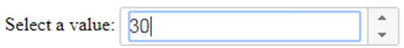

Los componentes o Widgets
son controles de JQueryUI que permiten organizar el contenido o
solicitar datos al usuario de manera más flexible y cómoda. La
apariencia de estos controles depende del tema seleccionado al descargar
la librería.
El aspecto de estos no componentes depende en gran medida del tema empleado. También es posible crear un estilo propio empleando la herramienta web ThemeRoller: ( https://jqueryui.com/themeroller/ )
La mayoría de los widgets se basan en elementos HTML simples. Para convertirlos en componentes de JQueryUI ( widgets ) deben seleccionarse mediante JQuery e invocar a una función determinada que los convierte en el componente correspondiente pudiendo además indicar ciertas propiedades.
Por ejemplo: Un Spinner es un widgets que muestra una caja en la que el usuario puede seleccionar un valor numérico mediante los botones + / - en el extermo derecho:

Vista de un Spinner de JQueryUI
Este componente se crea a partir de un elemento <input> de HTML. Este es seleccionado mediante JQuery y se invoca a la función
$().spinner()
para convertirlo en un componente Spinner:
<!DOCTYPE html> <html> <head> <meta charset="utf-8" /> <title></title> <!-- Libreria JQuery comprimida --> <script src="https://code.jquery.com/jquery-3.6.0.min.js"></script> <!-- Tema 'base' para JQueryUI --> <link href="https://code.jquery.com/ui/1.13.1/themes/smoothness/jquery-ui.css" rel="stylesheet" /> <!-- Libreria JQueryUI comprimida --> <script src="https://code.jquery.com/ui/1.13.1/jquery-ui.min.js"></script> <script> $(function () { // Declaración del spinner empleando el elemento HTML var widget_spinner = $("#spinner").spinner(); }); </script> </head> <body> <p> <label for="spinner">Select a value:</label> <!-- Elemento HTML que representa el Spinner --> <input id="spinner" name="value"> </p> </body> </html> |
Todos los componentes de JQueryUI pueden configurarse indicando un
objeto como argumento con los valores para sus correspondientes
propiedades.
Por ejemplo; en el caso de un control Spinner pueden configurarse las siguientes propiedades:
<!DOCTYPE html> <html> <head> <meta charset="utf-8" /> <title></title> <!-- Libreria JQuery comprimida --> <script src="https://code.jquery.com/jquery-3.6.0.min.js"></script> <!-- Tema 'base' para JQueryUI --> <link href="https://code.jquery.com/ui/1.13.1/themes/smoothness/jquery-ui.css" rel="stylesheet" /> <!-- Libreria JQueryUI comprimida --> <script src="https://code.jquery.com/ui/1.13.1/jquery-ui.min.js"></script> <script> $(function () { // Declaración del spinner empleando el elemento HTML var widget_spinner = $("#spinner").spinner({ min: 5, // Valor mínimo permitido. max: 2500, // Valor máximo permitido. step: 25 // Paso de 25 en 25. }); }); </script> </head> <body> <p> <label for="spinner">Select a value:</label> <!-- Elemento HTML que representa el Spinner --> <input id="spinner" name="value" value='1000'> </p> </body> </html> |
Los parámetros de configuración para de cada componente son diferentes y
dependen de sus características. Para consultarlos puede acceder a la web
oficial de documentación de JQueryUI: